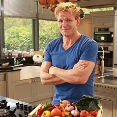

Гордон Рамзи
Детство и Юность
Родился Гордон Рамзи в Шотландии в 1966 году, но в городе Джонстон в 12 милях от Глазго прошли лишь первые 5 лет жизни Гордона. Детство будущего знаменитого кулинара счастливым не назовешь: у отца было пагубное пристрастие к спиртному. В состоянии опьянения глава семейства избивал жену на глазах четверых детей. О роскоши семья лишь мечтала: из-за алкогольных возлияний бизнес отца находился в плачевном состоянии, поэтому Рамзи мотались по стране в поисках места под солнцем. Остановились, переехав в 1976 году в английский Стратфорд-на-Эйвоне.
Кулинаров в семье Рамзи не было: отец сменил десяток профессий, побывав сварщиком, продавцом, владельцем магазина. Мама по образованию медицинская сестра. Гордон Рамзи не планировал связывать жизнь с кухней – с 11 лет подросток профессионально играл в футбол. Но в 18 лет, будучи в шаге от контракта с клубом «Глазго Рейнджерс», Гордон поставил крест на спортивной карьере из-за множественных травм.Гордон Рамзи отправился в полицейский колледж, но на экзаменах не добрал баллов. Тогда в биографии молодого человека появилась кулинария. 19-летний Рамзи стал студентом Технического колледжа в Оксфордшире, выбрав факультет отельного и ресторанного бизнеса.
Кулинария
Окончив колледж, Гордон Рамзи перебрался в столицу Британии, где устроился в престижный ресторан Harvey’s, шефом которого был мэтр кулинарного искусства Марко Пьер Уайт. Получив первый опыт, молодой повар сменил ресторан и наставника: в первом британском трехзвездочном Le Gavroche Гордон Джеймс научился азам классической французской кухни под началом мэтра Альбера Ру.Спустя год французский кулинар покинул Le Gavroche и позвал способного ученика в новый ресторан, построенный во французских Альпах. Гордон Рамзи последовал за мэтром. Вскоре неуемная энергия позвала шотландца в дорогу: молодой повар прибыл в Париж, где 3 года учился мастерству у французских маэстро кулинарного искусства Ги Сивуа и Жоэля Робюшона.
Продемонстрировать возросшее мастерство Гордон Рамзи смог на частной яхте, куда владелец позвал его как личного повара. После годового путешествия по волнам Атлантического океана вокруг Бермудских островов Рамзи вернулся в британскую столицу.
Полгода Гордон трудился шефом в пригородном ресторане La Tante Claire, пока о перспективном ученике не вспомнил учитель Альбер Ру, позвав шотландца занять место шефа лондонского ресторана Rossmore.
Все повара упрямы, эгоистичны и думают только о себе. Шеф должен быть авантюристом. Ведь когда тебе впервые дают людей в подчинение, ты не знаешь, что с ними делать. Из десятков человек на кухне лучшим может быть только один. Это сродни войне. Кухня – сумасшедшее место, где всегда что-то кипит. Считайте, что я киплю вместе с моей едой.

Гордон Рамзи
|
Гордон Рамзи поднял престиж заведения до заоблачных высот: за 4 года Rossmore получил 3 звезды Мишлен. Чтобы вкусить изысканные блюда от шефа, гурманам приходилось бронировать столик в «Россморе» за полтора-два месяца.
Гордон Джеймс стал владельцем 25% акций заведения, но, поссорившись с остальными акционерами, покинул «Россмор», прихватив с собой весь обслуживающий персонал – от официантов до поваров.
Позже звездный шеф-повар назвал поступок самым трудным решением в жизни, но этот шаг открыл ему путь в самостоятельное плавание. С этого момента Гордон Рамзи работал только на себя и стал предпринимателем.
В 1998 году бизнесмен открыл первый ресторан Gordon Ramsay at Royal Hospital Road. Спустя 3 года заведение славилось тремя звездами Мишлен. Таким образом, в 2001 году Гордон Рамзи стал первым британцем с таким высоким статусом.
На домашней кухне необходимо иметь очень хороший блендер и антипригарные сковороды. И, естественно, множество фантастических ножей. Но что более важно для хорошей готовки — все продукты должны быть свежими и отборными. Свежее и сочное мясо, сезонные овощи и зелень, к примеру. Использование непосредственно свежих продуктов даст ощутимую разницу во вкусе готового блюда.

|
Мастер-класс Гордона Рамзи
|
В 2002-м бизнесмен открыл в Белгравии второе заведение высокой кухни – ресторан Pétrus, где стал шеф-патроном. Мишленовскую звездочку «Петрюс» получил, не проработав и года. В 2007-м Рамзи праздновал вручение второй звезды для «Петрюса».
В новом столетии сеть ресторанов легендарного британца стремительно разрастается. В Англии у Рамзи 11 кулинарных заведений, половина которых с мишленовскими звездами. За пределами Британии Гордон Рамзи открыл 16 ресторанов и 3 паба. Попробовать блюда по рецептам мэтра можно в Париже, Нью-Йорке, Токио, Тоскане, Сингапуре.
Трудолюбие Гордона Рамзи вызывает восхищение: открывая новые ресторации в Европе, Азии и Америке, он успевает писать книги. Первая – «Страсть к вкусу» – вышла в середине 1990-х. До 2007-го автор презентовал 14 кулинарных сборников и 2 автобиографические книги. В сборниках есть рецепты первых, вторых блюд, десертов, всевозможной выпечки, в том числе знаменитых «Яблочного», «Пастушьего», «Бостонского сливочного» пирогов, брауни и крамблов.
Рецепты лучших ресторанных блюд Гордон Рамзи придумывает и готовит дома, на собственной кухне, оборудовав ее по последнему слову техники. Денег на обустройство британец не пожалел, вложив $100 тысяч на технические приспособления, посуду, девайсы.амР